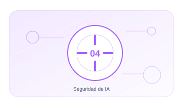

04 · PILAR
Seguridad de IA
Aplicar seguridad por diseño a LLM, RAG, agentes, MCP y modelos.
EnfoqueTécnico, práctico y entendible
Contenido6 guías extensas y aplicables
Aplicable aOrganizaciones y sistemas reales

04.01 · GUÍA
Seguridad LLM
Protege entradas. contexto. salidas. secretos y consumo del modelo.
19–25 min+1.871 palabrasAbrir guía →
04.02 · GUÍA
Seguridad RAG
Asegura la recuperación. las fuentes. los permisos y el contexto enviado al modelo.
17–23 min+1.694 palabrasAbrir guía →
04.03 · GUÍA
Seguridad de agentes
Limita la autonomía y el impacto de agentes que usan herramientas y ejecutan acciones.
17–23 min+1.659 palabrasAbrir guía →
04.04 · GUÍA
Seguridad MCP
Gobierna servidores. herramientas. manifests. autorización y cadena de suministro MCP.
15–21 min+1.562 palabrasAbrir guía →
04.05 · GUÍA
Seguridad de modelos
Protege pesos. endpoints. datos de entrenamiento y disponibilidad.
15–21 min+1.525 palabrasAbrir guía →
04.06 · GUÍA
AI Hardening
Los 8 dominios para endurecer modelos. agentes y plataformas. con modelo de madurez y mapeo a marcos.
20–26 min+1.996 palabrasAbrir guía →
01
PrevenirControl y evidencia aplicable
02
AislarControl y evidencia aplicable
03
DetectarControl y evidencia aplicable
04
ResponderControl y evidencia aplicable
05
AprenderControl y evidencia aplicable
Cada guía incluye explicación, implantación, controles, evidencias, errores habituales, métricas y referencias.